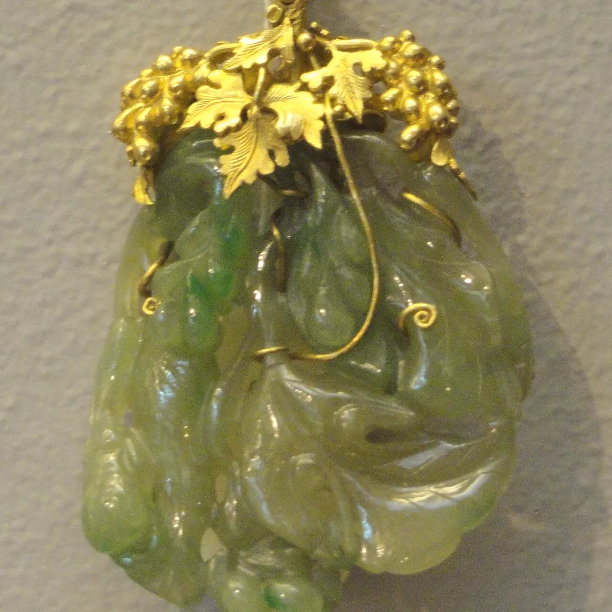
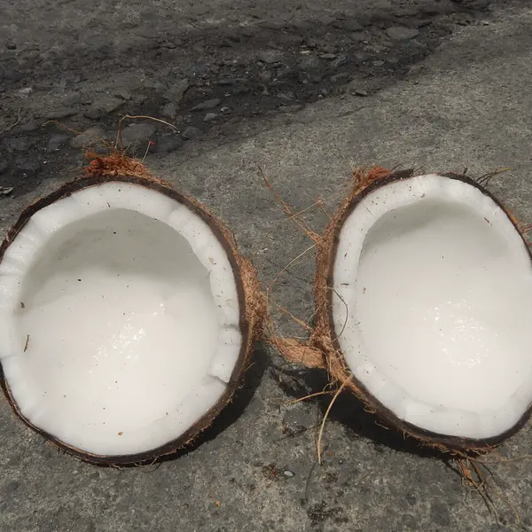

அனைத்து சிகிச்சைகள்சிகிச்சை
குவாஷா சிகிச்சை
வழுவழுப்பான கருவியால் சருமத்தை மென்மையாக வருடும் சீன மரபு. இரத்த ஓட்டம் கூடுவதால் தற்காலிகச் சிவப்பு தோன்றலாம்.

எப்படி உதவுகிறது
- உடல் வலியைத் தணிக்க உதவுகிறது
- இரத்த ஓட்டத்துக்குத் துணைபுரிகிறது
- இயல்பான சுத்திகரிப்புக்குத் துணைபுரிகிறது
- முதுகு, கழுத்து வலியைத் தணிக்க உதவுகிறது
- சருமத்தைப் பேணுகிறது
- மன அழுத்தத்தையும் பதற்றத்தையும் தணிக்கிறது
நாங்கள் வழங்குபவை
- கழுத்தும் தோளும்
- முதுகு
- முகம்
- தலை
- முழு உடல்
உங்களுக்கு ஏற்றது எது என்று எங்கள் மருத்துவரிடம் கேளுங்கள்.
இத்தளத்திலுள்ள தகவல்கள் பொதுவான நல்வாழ்வு விழிப்புணர்வுக்கானவை. இவை நோயறிதலோ, குணமாகும் என்ற உறுதிமொழியோ அல்ல; மருத்துவ ஆலோசனைக்கு மாற்றும் அல்ல. உங்களுக்குப் பரிந்துரைக்கப்பட்ட சிகிச்சையைத் தொடருங்கள், தகுதி பெற்ற மருத்துவரை அணுகுங்கள். எங்கள் சேவைகள் உரிய தகுதிக்கும் சட்ட வரம்புக்கும் உட்பட்டு வழங்கப்படுகின்றன. விளக்கப் படம்.
இதே தூணிலிருந்து

ஹிஜாமா சிகிச்சை
குறிப்பிட்ட புள்ளிகளில் செய்யப்படும் நபிவழி சுன்னா ஈர கப்பிங் முறை.

மர்ம அக்கு சிகிச்சை
107 மர்மப் புள்ளிகளைக் கொண்ட பண்டைய இந்திய சிகிச்சை.

மசாஜ் சிகிச்சை
கைகளால் தசைகளை அழுத்தி, தேய்த்து, பிசையும் சிகிச்சை.

தொப்புள் சிகிச்சை
உடலின் மையமான தொப்புளைச் சுற்றி வெதுவெதுப்பான மூலிகை எண்ணெய் இடப்படுகிறது.